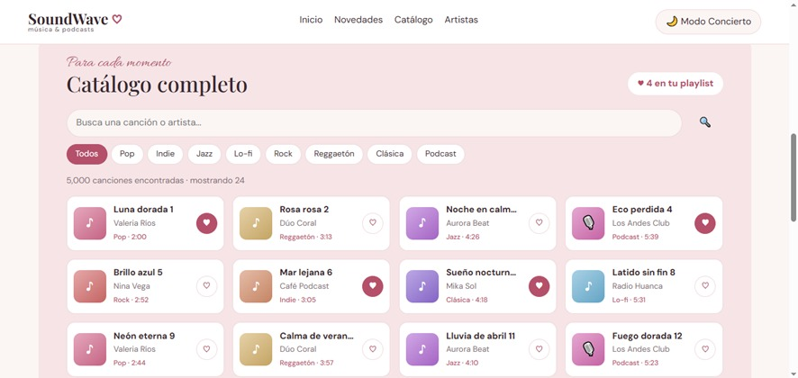
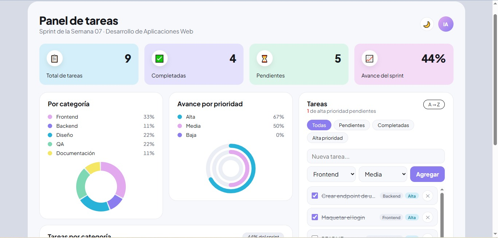
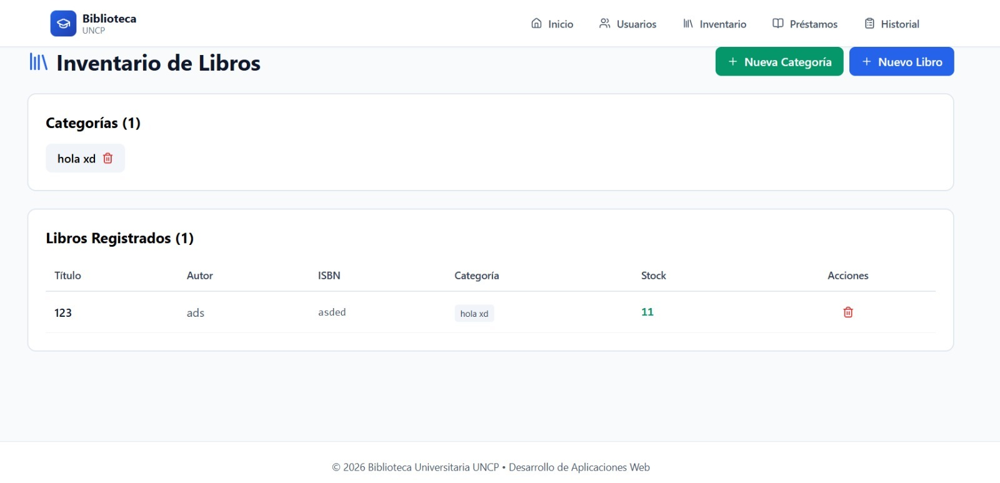
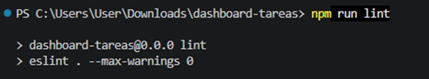
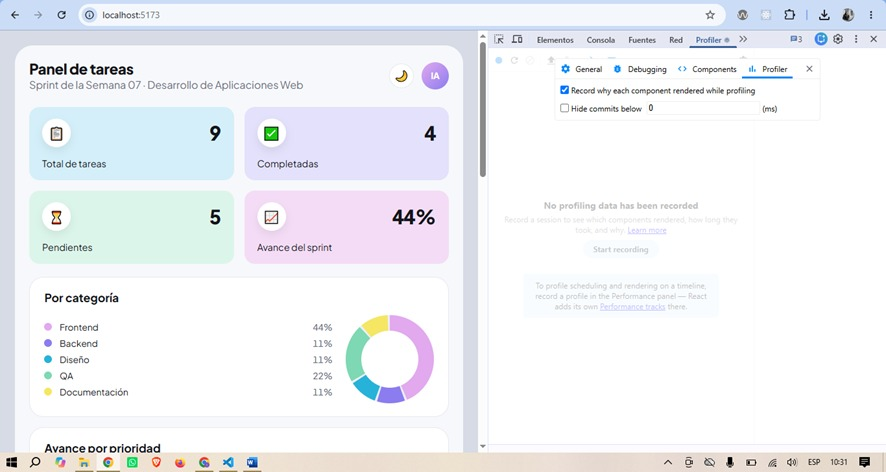

Bitácora de Aprendizaje ·
Temas tratados
Semana centrada en React Hooks y manejo de estado en SPA. Inició con la Evaluación Parcial (React + Vite + TypeScript + LocalStorage) y continuó con las dos partes de la Guía Práctica 07: useState, useEffect, useContext, useRef, useReducer, useCallback, useMemo y Hooks personalizados.
¿Qué aprendí?
- Ciclo de render y StrictMode: un array de dependencias vacío [] en useEffect no significa "se ejecuta una sola vez" en StrictMode; por eso el cleanup es obligatorio para evitar peticiones duplicadas y fugas de memoria.
- Re-render condicional: si el nuevo estado es igual al anterior (Object.is), React no vuelve a renderizar.
- useReducer vs. useState: el reducer concentra toda la lógica de cambios en una función pura e inmutable, más fácil de probar y explicar que varios useState sueltos.
- Optimización sin overuse: useCallback solo tiene sentido cuando la función se pasa a un hijo memoizado con React.memo; useMemo evita recalcular filtros u ordenamientos si sus dependencias no cambiaron.
- Hooks personalizados: un hook propio (useFetch, useLocalStorage) extrae la lógica repetida del componente y la vuelve reutilizable, respetando las reglas de los Hooks.
- Trabajo en equipo con Git: conviene hacer commit antes del pull, crear una rama de respaldo y saber deshacer con git merge --abort o git reset --hard ORIG_HEAD.
Laboratorio / Práctica
- Evaluación Parcial — Sistema de Biblioteca Universitaria (en equipo, React + Vite + TypeScript): desarrollé el Módulo 1, Gestión de categorías y libros en Inventario.tsx: CRUD con validaciones (ISBN de 10/13 dígitos sin repetir, stock ≥ 0, categorías únicas), componentes reutilizables (InputField, SelectField, TextAreaField), tablas responsivas con buscador, persistencia en LocalStorage con type guards y la función actualizarStock() para el módulo de Préstamos.
- Guía 07, Parte 1 — "SoundWave": catálogo de música y podcasts con reproductor y control de volumen (useReducer + useRef), novedades desde una API pública con estados de carga/éxito/error (useEffect + async/await + AbortController), tema Modo Estudio/Concierto (useContext), catálogo de 5000 canciones con buscador (useMemo, useCallback) y el hook useFetch.
- Guía 07, Parte 2 — Dashboard de Gestión con Estado Complejo: dashboard de tareas con KPIs, dona por categoría y barras, usando useReducer (acciones ADD, REMOVE, TOGGLE, FILTER, SORT), ThemeContext sincronizado con localStorage, useMemo, useCallback + React.memo, useRef y el hook useLocalStorage.
Herramientas y Validaciones
- Herramientas: Node.js, Vite, React 19, TypeScript, react-router-dom, lucide-react, VS Code, Git y GitHub, React DevTools (Components y Profiler), ESLint con eslint-plugin-react-hooks, y las APIs JSONPlaceholder y DummyJSON.
- ESLint: npm run lint con react-hooks/exhaustive-deps en error y --max-warnings 0 → 0 warnings.
- Profiler: al marcar una tarea solo se re-renderiza esa fila; el resto aparece como "did not render" gracias a React.memo + useCallback.
- Cleanup y persistencia: la petición anterior aparece como (canceled) al cambiar rápido de acción, los listeners no se duplican, y tareas, tema, borrador e inventario se mantienen al recargar (verificable en F12 → Application → Local Storage).
Evidencias
Repositorios en GitHub:
- Biblioteca Universitaria (equipo): github.com/josuewho10/biblioteca-universitaria — rama andrade-inventario, con Pull Request a main.
- SoundWave (individual): github.com/Ingrid-an/Semana7_Practica
- Dashboard: repositorio con README que incluye diagrama de flujo de estado, diagrama del ciclo de render (Mermaid) y la justificación de cada hook.




